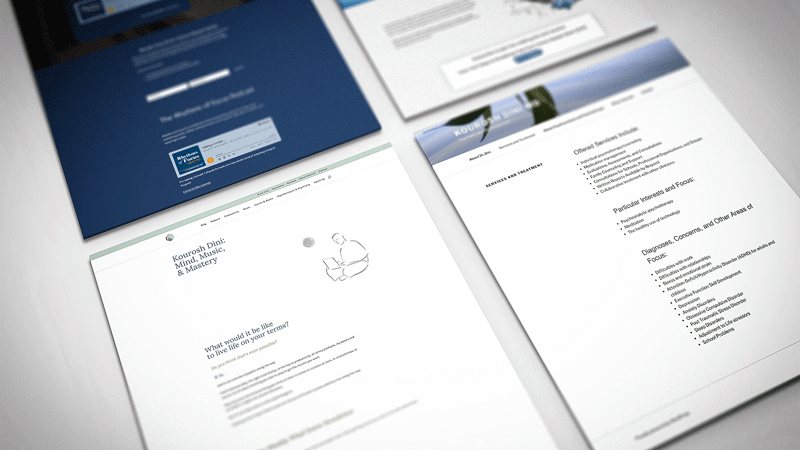

Consolidating a Fragmented Brand: Streamlining the Path to Conversion
The Business Problem: A Siloed Digital Ecosystem
The client is a highly respected professional with a multifaceted career: a clinical therapist, published author, musician, speaker, and podcaster. While his expertise was vast, his digital presence was heavily fractured.
His ecosystem consisted of four disconnected websites:
- Personal/General Portfolio
- Clinical Practice
- Podcast Platform
- A premium educational course and community.
The Impact: This fragmentation created massive friction in the user journey. A visitor finding him through a podcast interview had no intuitive path to discover his books or enroll in his Waves of Focus community. The fragmented architecture was causing high bounce rates, diluting his brand authority, and ultimately resulting in lost cross-pollination opportunities for his paid services and clinical practice.

Discovery & Empathy: Understanding the Core Philosophy
Before opening Figma, I needed to understand the human being behind the brand. I embedded myself in the project, conducting in-depth stakeholder interviews with the client.
Through these discussions, I uncovered his central operational philosophy: "Mastery and meaningful work develop from guided play." As an avid video game enthusiast and a therapist, he strongly believes that true productivity stems from enjoyment and calmness.
The Insight: The new platform couldn’t just be a corporate directory of services. To convert visitors into community members or clinical patients, the website needed to inherently evoke a sense of deep calm, trust, and subtle playfulness. The design itself had to prove his philosophy.
Strategy & Information Architecture: Merging Four Worlds
The most critical phase of the project was solving the structural mess. How do you combine clinical therapy services with music and podcasts without confusing the user's mental model?
I conducted a content audit across all four existing sites and began mapping a new Information Architecture (IA).
- The Goal: Create a unified navigation structure that allowed distinct audience segments (e.g., a patient seeking therapy vs. a creative seeking productivity advice) to find exactly what they needed within two clicks, while gently exposing them to his other offerings.
- The Execution: We moved away from separate domains and built a centralized hub. I designed a mega-menu and a modular homepage layout that served as a "routing station," guiding users seamlessly to their specific areas of interest.

Wireframing & Prototyping: Testing the Flow
With the IA locked, I moved into low-fidelity wireframing. The focus here was strictly on layout, content hierarchy, and conversion funnels—specifically driving traffic to the Waves of Focus community and clinical bookings.
We reviewed the wireframes together in iterative cycles. I prioritized an asymmetrical, breathable layout that reduced cognitive load. By testing the user flows early without the distraction of colors or typography, we ensured the "routing" logic actually worked for his diverse audience.

Visual Design
Once the structural foundation was solid, I developed a visual identity that translated his philosophy of "calmness and play" into a digital interface.
- Breathable UI: We utilized extensive whitespace, soft margins, and a muted, calming color palette to reduce visual noise and lower user anxiety.
- Typography: Clean, highly legible typography was chosen to prioritize the reading experience for his editorial and clinical content.
- Brand: To inject warmth and identity, I integrated bespoke Persian-style illustrations throughout the user journey. Instead of generic stock photography, these acted as cultural and personal touchpoints, building immediate trust and lowering the barrier to entry for potential clients.